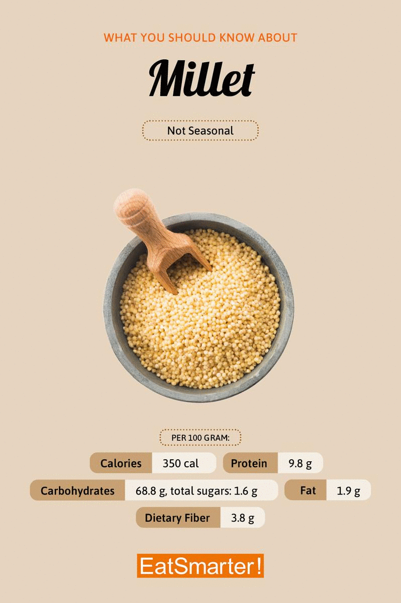
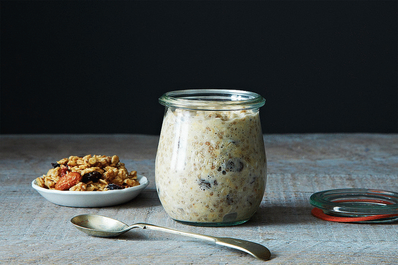
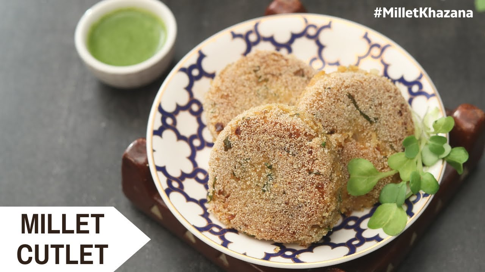

Welcome to Millets World
"Millets: The smart choice for a balanced diet."
"Say goodbye to processed grains, say hello to milets."
"Millets: The ancient grain for modern health."


Why millets are called super food?
The energy, proteins, good fats, minerals and vitamins that millets provide
makes them a superfood. Millets are rich in fiber, protein, vitamins,
and minerals, making them an excellent addition
to a healthy diet.
Today i represent the recipe of kodo millet that is "Kodo millet cutlet"

Why i choosen kodo millet?
- Low glycemic index Which means that Kodo millets release glucose/energy slowly, over a longer
period of time and thus helps in sugar control.
- Gluten-free Great for people with gluten intolerance or celiac disease.
- Good source of vitamins Vitamin B6, Niacin, folic acid and minerals
such as calcium, iron, magnesium and zinc
Nutritional value of kodo millet.

Recipe
Ingredients
Kodo millet - 1/2 cup.
Potatoes - 1.
Garam masala - 1/2 tbs.
oil - 2 tbs.
Red chilli powder - 1/2 tbs.
Method
Mix kodo milets with 1-1/2 cups of water and pressure cook until 1 or 2 whistles or cooked.
Boil, peel and mash the potatoes.
Combine the potatoes, cooked kodo milet, garam masala powder, salt, mint leaves and coriander leaves in a bowl.
Shape them into desired shapes, Heat oil in a deep frying pan over medium flame.
Remove, drain excess oil and serve.